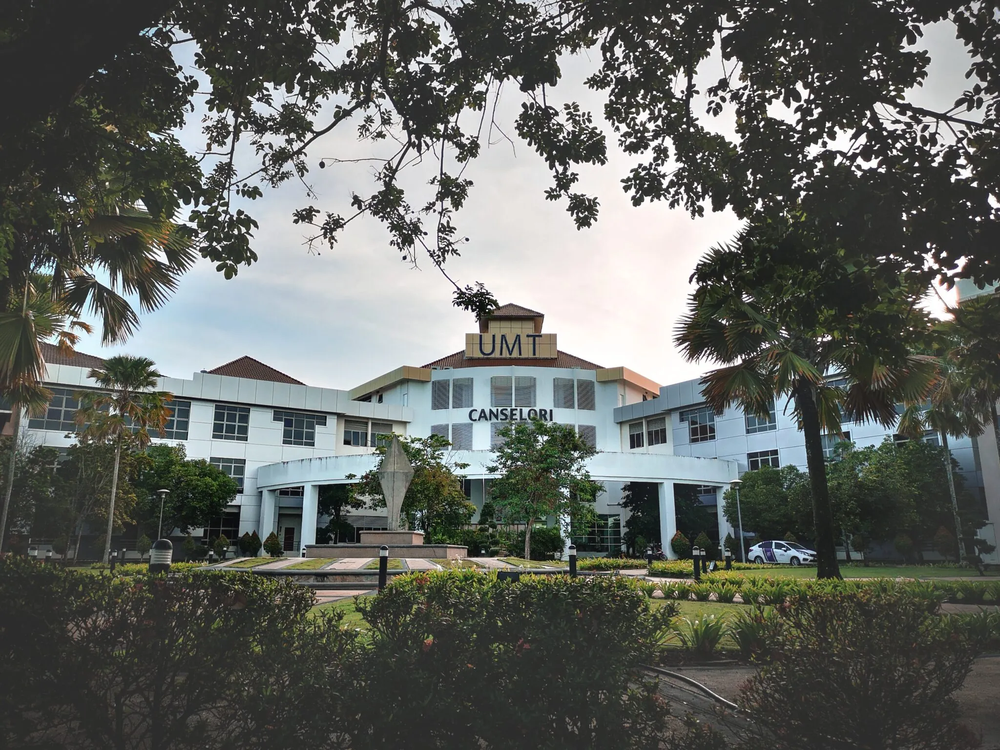
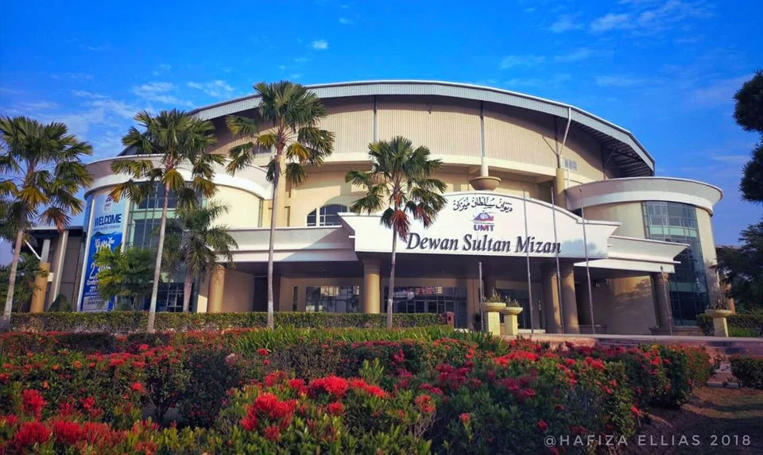
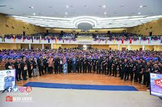

Universiti Malaysia Terengganu (UMT) is a leading education institution focusing on marine science, environmental studies, technology, and innovation.
| Fakulti | Program |
|---|---|
| Fakulti Sains Sekitaran & Marin (FSSM) |
|
| Fakulti Sains Makanan dan Agroteknologi (FSMA) |
|
| Fakulti Sains Perikanan & Akuakultur (FSPA) |
|
| Fakulti Teknologi Kejuruteraan Kelautan (FTKK) |
|
| Fakulti Pengajian Maritim (FPM) |
|
| Fakulti Perniagaan, Ekonomi Dan Pembangunan Sosial (FPEPS) |
|
| Fakulti Sains Komputer dan Matematik (FSKM) |
|
| Pusat Asasi STEM | Asasi STEM |
Universiti berfokus marin terunggul dalam negara dan disegani di peringkat global.
Menjana ilmu untuk kesejahteraan masyarakat dan kelestarian alam.
Terokaan Seluas Lautan Demi Kelestarian Sejagat.

Universiti Malaysia Terengganu (UMT) telah bermula dengan sebuah Pusat Perikanan dan Sains Samudera pada tahun 1979, yang menyediakan kemudahan latihan pelajar Program Perikanan dan Sains Samudera di samping menyediakan kemudahan penyelidikan untuk pensyarah. Melalui Penstrukturan semula program akademik di UPM, keseluruhan Fakulti Perikanan dan Sains Samudera telah dipindahkan ke Terengganu dan diberi nama baru iaitu Fakulti Sains Gunaan dan Teknologi (FSGT) mulai Jun 1996. Turut ditubuhkan ialah Fakulti Sains dan Sastera Ikhtisas (FSSI) dan Pusat Pengajian Matrikulasi (PPM). Mulai Jun 1996, kampus ini telah diiktiraf (secara dalaman UPM) sebagai sebuah pusat tanggungjawab dan dinamakan Universiti Pertanian Malaysia Cawangan Terengganu (UPMT) dan diketuai oleh seorang Rektor (designate). Jemaah Menteri dalam mesyuaratnya pada 5 Mei 1999 telah bersetuju meluluskan cadangan penubuhan Kolej Universiti Terengganu (KUT) berasaskan Pusat Perikanan dan Sains Samudera Universiti Pertanian Malaysia di Mengabang Telipot, Kuala Terengganu. Perintah Kolej Universiti Terengganu (Perbadanan) 1999 (PUA 292) telah diluluskan oleh Dewan Rakyat pada 26 Julai 1999. KUT adalah Kampus bersekutu UPM dan pelajar akan dikurniakan ijazah dari UPM. KUT telah diberi kuasa autonomi sebagai Kolej Universiti Terengganu pada 1 Mei 2001. Pada 1 Julai 2001 KUT dengan rasminya telah bertukar nama sebagai Kolej Universiti Sains dan Teknologi Malaysia dengan singkatan KUSTEM. Bermula pada 1 Februari 2007 bersamaan 13 Muharam 1428 H, tercipta satu lagi sejarah dalam sistem pendidikan di Malaysia. Dalam usaha mengukuhkan kedudukan IPTA Negara, enam buah Kolej Universiti telah melalui penjenamaan semula kolej-kolej universiti. Kini KUSTEM di kenali sebagai Universiti Malaysia Terengganu.

